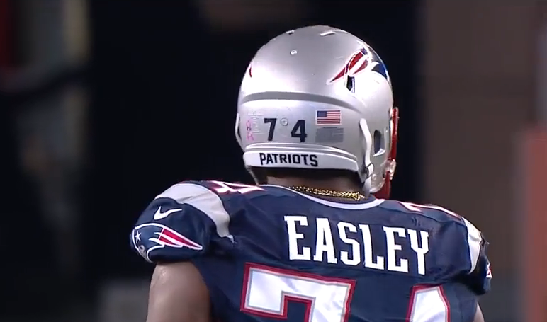

Schedule
Results
DRAFT PICKS
Round 1, Pick 29 (29): Dominique Easley, DT, Florida.
Former Florida Gator Dominique Easley was dubbed "the scariest man in college football" by Lost Lettermen.
From the chains Easley draped around his neck during pregame to the Chucky doll he carried around with him practically everywhere, there are plenty of reasons to be intimidated by Easley. And that's not even mentioning his 288-pound sculpted frame. “People might mistake Dominique for being this tough, grimy person from the way he plays football. You see these pictures with this angry face on. That’s completely different from how he is off the field. He may try to put up a front,” Juan Easley, Dominique’s uncle, said, according to Tyler Jett of the Independent Florida Alligator. At an SEC media day Easley admitted to not watching much football and being more of a cartoon guy, SpongeBob to be specific. He is also known for his dancing on the sidelines.
“I just have fun," Easley said, according to Rachel George of The Orlando Sentinel. "I just try to keep dancing, have fun."
When Easley was younger, he was bowlegged and had to wear braces. Per George, Dominique’s father, David Easley, said, “Even with the braces, he was still non-stop moving."
Easley didn’t have an easy childhood, however. Adam Pincus of the Alligator wrote: He had to stay active. Headaches from staying inside forced Easley to the outdoors. Video games never interested him. He wanted to see the world. Moving was also not a choice. He moved eight times with his family. He remembers the McDonald’s housing projects and moving to his grandma’s house when they got evicted and the place on Sherman Street. “When I was a kid, I used to always take the bus and walk everywhere. I would see a whole lot of homeless kids,” Easley said, via Pincus. “Not even adults, but kids. A lot of my friends didn’t grow up off of anything.”
He eventually became the highest-ranked football prospect in New York and the No. 12 prospect in all of the country, according to Scout.com
Easley’s father was overseas in the military while he was in middle school and high school. Shalise Manza Young of The Boston Globe quoted Easley as saying, “Well, that really helped me as a man. There’s no excuse for nothing because they were put in situations that were life or death. So the life that we’re living now is much easier than the life that they had to live [in combat].” When Easley made it to college things did not get too much easier for him. Between 2011 and 2013, he sustained a torn anterior cruciate ligament and medial meniscus in his right knee and another torn ACL in his left. Despite these restrictions, he displayed enough potential at Florida to be selected in the first round of the NFL draft by the Patriots. "I’ve been watching the Patriots for a long time," Easley said in a conference call with the media, via Patriots.com. "I’m pretty sure you guys know some players from Staten Island played there and then Coach Urban Meyer had a lot of players go to the Patriots. It’s a winning team so I’m real excited."
Round 2, Pick 30 (62): Jimmy Garoppolo, QB, Eastern Illinois
The 2010 2-star quarterback recruit out of Rolling Meadows High School is now a second-round NFL draft pick out of Eastern Illinois. That 2-star ranking was actually the best I could find for Jimmy Garoppolo, the heir apparent to Tom Brady in New England.
Out of high school, ESPN.com had Garoppolo unranked in the nation, unranked at his position and even unranked in his state. There was no player news, and the only recruiting info available in his ESPN profile was that he signed his offer from Eastern Illinois.
His college profile on ESPN.com (subscription required) paints a much different picture. Garoppolo was the fourth-highest-rated quarterback in the 2014 NFL draft class, in the top 50 players in the country and was listed as having exceptional intangibles and durability.
In college, Garoppolo established himself as the most accomplished quarterback in Eastern Illinois history. He holds the records for both the most and second-most touchdown passes in a single game. Other single-season records he holds include the most touchdown passes, most completions and most passing yards. Career records include the same three categories.
The players listed right behind him in those record book are often New Orleans Saints head coach Sean Payton or Dallas Cowboys quarterback Tony Romo.
In high school, Garoppolo finished second in career passing touchdowns in his school's history. He also holds the second-place spot for single-season passing touchdowns.
Scout.com had eight high school quarterbacks out of Illinois ranked in the top 150 prospects in the nation in 2010. Garoppolo was not one of them. Four years later, however, he is the only one in the NFL.
Round 4, Pick 5 (105): Bryan Stork, C, Florida State
Five years and 55 pounds after heading to Florida State as a freshman, the then-No. 26-ranked tight end has been drafted to the NFL by the Patriots as an interior offensive lineman.
Center Bryan Stork from Vero Beach, Florida, was the Patriots' first selection on the third day of the draft.
When asked in a conference call with the media, via Patriots.com, about changing positions, Stork responded, “It doesn’t matter. I’m just here to play ball. That’s all it is.”
Before getting to high school, Stork's father, Larry Stork, began fighting colon cancer, according to Laurel Pfahler of Rivals.com. Unfortunately, he passed away at the age of 55, early in Stork’s senior year in high school.
"It was tough, but at least he died knowing I was going to play for Florida State," said Stork. "He knew I was accomplishing my dream. He wanted to fight to stay alive so he could watch me on TV," Stork said. "He fought to the last second, but we told him it was OK to let go. I just had to cherish every moment I could. He was like my best friend."
Stork’s father may have passed away, but his son is someone to be extremely proud of. He went on to win a national championship his final year in college and is now a New England Patriot.
Round 4, Pick 30 (130): James White, RB, Wisconsin
The Patriots lost running back Blount this offseason and needed to add depth at the position. Because of this, the team used its second fourth-round pick on running back James White.
White is used to being a depth player. But he is also used to fighting to shine when he can for his team. In high school, he played for a national champion in St. Thomas Aquinas. While there, he took a backseat to current Cincinnati Bengals star running back Giovanni Bernard, who was in the same grade.
In their junior years, Bernard was the feature back and picked up over 1,500 rushing yards. White failed to eclipse 1,000 yards on the ground, but he was a touchdown machine. Bernard scored 19 total touchdowns, while White scored 21.
When it came to recruiting, Bernard received all of the spotlight. He ranked as the No. 16 running back in the country, according to ESPN, whereas White ranked No. 68.
Unfortunately, not a whole lot changed for White in college. During his freshman year, he trailed in carries to both John Clay and Montee Ball. Despite having less carries than two other rushers, though, he still led the team in rushing yards with 1,052.
His sophomore and junior years had a similar feel, with Ball taking control of the offense. Over those two years, Ball combined for over 60 touchdowns and had twice as many carries as White did.
In 2013, Ball went on to the NFL and White had his chance to lead the team in carries. Unfortunately, running back Melvin Gordon hit the scene and stole the spotlight with less carries and more yards.
Although White has been overshadowed, his production is undeniable. He ranked No. 4 all time at Wisconsin with 4,015 rushing yards and No. 3 all time in rushing touchdowns with 45.
Round 4, Pick 40 (140): Cameron Fleming, OT, Stanford
Regarding whether it’s harder to be a rocket scientist or be successful in the NFL, Fleming said, via Patriots.com: "I don’t think either one is harder than the other one. If I was going to go down that path then I’m going to give it my all. I’m going to try to be the best rocket scientist. I can’t be an astronaut, I’m too tall. I’m actually an inch too tall. But if I was going to go down that route I would have given it my all. Now I’m going down the NFL route and playing with the Patriots and I’m just going to give it my all. I don’t think there’s any one that’s more difficult" than the other.
According to the Q&A, both of Fleming’s parents were in the military, and he lived near NASA growing up, which led to his decision on his major.
At 6’5”, 235 pounds, Fleming is one of the best run-blockers in the draft and he uses his size to not allow defenders around him. After drafting a running back, the Patriots added some depth in their run protection.
Round 6, Pick 3 (179): Jon Halapio, OG, Florida
“It was very difficult, but I just love football. When you’re in the football game, you’re just filled with adrenaline at the time so you don’t really feel the pain that much,” Jon Halapio said, per Patriots.com, speaking of when he played with a torn pectoral muscle last July.
According to Shalise Manza Young of The Boston Globe, Halapio has also played with a torn hamstring, chronic knee and back pain and a gauged eye that required stitching—after the game, of course.
As team captain at the University of Florida both his junior and senior seasons, Halapio is a clear leader and one of the toughest players on the field at any given time. In a time when every injury in football is taken very seriously, it is nice to see an athlete who will fight through the pain.
Halapio’s toughness has been well-documented before this as well. His high school scouting report from Scout.com lists his strengths as intensity, power and strength and toughness.
Round 6, Pick 22 (198): Zach Moore, DE, Concordia (MN)
Concordia is a Division II school. Zach Moore, however, is not a Division II-caliber prospect.
While Moore was in high school, he was recruited by multiple Division I colleges. Unfortunately, he was deemed academically ineligible, according to Rich Campbell of The Chicago Tribune.
Moore had to go to Concordia instead, but he does not regret it, telling Campbell, “I have no regrets. I met some great people, great coaches. I was able to get my academics on straight.”
Moore now has a degree in criminal justice as well as an opportunity to play for the New England Patriots.
At Concordia, Moore holds the school records for career quarterback sacks, yards from sacks, fumbles forced and quarterback hurries.
“I’m an all-around pass rusher. I can get through quickness, power, anything,” he said, via Patriots.com, upon being drafted. “It just comes from me working on my technique and being technically sound, because eventually you’re going to have to rely on technique.”
As far as feeling like an underdog being from Division II, it appears that Moore would take on that role no matter where he is from. Per Patriots.com, he said, “There’s always something to prove. Even if I wasn’t a Division II football player, I’d always have a chip on my shoulder and I’d always be a competitor.”
Round 6, Pick 30 (206): Jemea Thomas, CB, Georgia Tech
A guy who is 5’9” and under 200 pounds is the type of player you would want to get hit by if you have to get hit by anyone in the NFL, right? That’s not the case with Jemea Thomas.
Thomas is one of the hardest-hitting rookies this season. He has deceptive strength, and his willingness to put a hit on anyone really separates him from smaller players. In an interview with Wes Durham of RamblinWreck.com in 2011, Thomas said, “Coming from Fitzgerald, we had won state in weightlifting a couple times in a row, so I came in already benching 315.”
Thomas was an All-State defensive back in Georgia during high school. Rivals.com had him as the No. 70-ranked prospect.
He gradually became more productive in college, and in his senior year he had 73 unassisted tackles.
Now he is the newest piece in a revamped Patriots secondary.
“At [Georgia] Tech I played it all,” Thomas said in a conference call, via Patriots.com. “I played every position in the secondary, so whatever they want me to come in and play that’s what I’m looking forward to doing.” When asked if he had a favorite position, he responded, “I love it all.”
Round 7, Pick 29 (244): Jeremy Gallon, WR, Michigan
After the selection of the 5’9”, 192-pound Jemea Thomas, it would have been easy to think that the Patriots could not go any smaller with their next pick, but they managed.
At 5’7” and 185 pounds, Michigan receiver Jeremy Gallon becomes one of the smallest players on the team. This small seventh-round pick could make major contributions, though.
In Gallon’s senior season as a Michigan Wolverine, he caught 89 passes for 1,373 yards.
The road to his success has included far more than just football stats, however. His numbers in the classroom have been his biggest accomplishment.
Michael Rothstein of ESPN.com discussed Gallon’s road to Michigan, noting that Gallon was the first person in his family to attend college, so it was important that he graduated.
Gallon did not realize that college was even in the cards for him until his high school coach stressed it to him.
During the recruiting process, Michigan offered him more than a football program.
"[Michigan] would always come and talk to me about school," Gallon said, via Rothstein. The other schools would come and talk to me about football," Gallon said. "It was a big difference. I'm not just going to go to a school for football. I want to graduate from a college.”
Schooling was always hard for Gallon. He never did great on testing or held a GPA over 3.0, but he worked hard to pass and be eligible to continue to play football, which has now provided him with an opportunity in the NFL.
As the Patriots' final selection in the 2014 NFL draft, there is another Michigan-man who Gallon can relate to, according to Patriots.com: "I know [Tom Brady] struggled a little bit and I know with the draft he was waiting too. When he got that chance and when he got his name called he made the best of it. For me, being in the same situation, I want to follow in his footsteps to be one of the greatest to play the game."
Most promising draft pick of 2014
SEASON
The 2014 New England Patriots season was the franchise's 45th season in the National Football league, the 55th overall and the 15th under head coach Bill Belichick.
The Patriots finished 12–4 for the third straight year, winning their sixth straight AFC East title, as well as the top-overall seed and home field advantage for the AFC playoffs. With their seeding, New England was awarded a first-round bye in the playoffs for the fifth season in a row, the first such occurrence for any team since the league switched to a 12-team playoff format in 1990 (surpassing the 1992–95 Dallas Cowboys). They finished fourth in the NFL in scoring (468 points) and eighth in points allowed (313), and first in point differential (with an average margin of victory of 9.7 points).
The Patriots defeated the Baltimore Ravens 35–31 in the Divisional Round of the playoffs, advancing to their fourth straight AFC Championship game. There, they defeated the Indianapolis Colts 45–7 to advance to their 8th Super Bowl and 6th under Bill Belichick. On February 1, 2015, the Patriots played the Seattle Seahawks in Super Bowl XLIX. After tying the game 14–14 at halftime and falling behind ten points in the third quarter, the Patriots rallied in the final quarter of the game to secure a 28–24 lead. The win secured their fourth championship in franchise history.